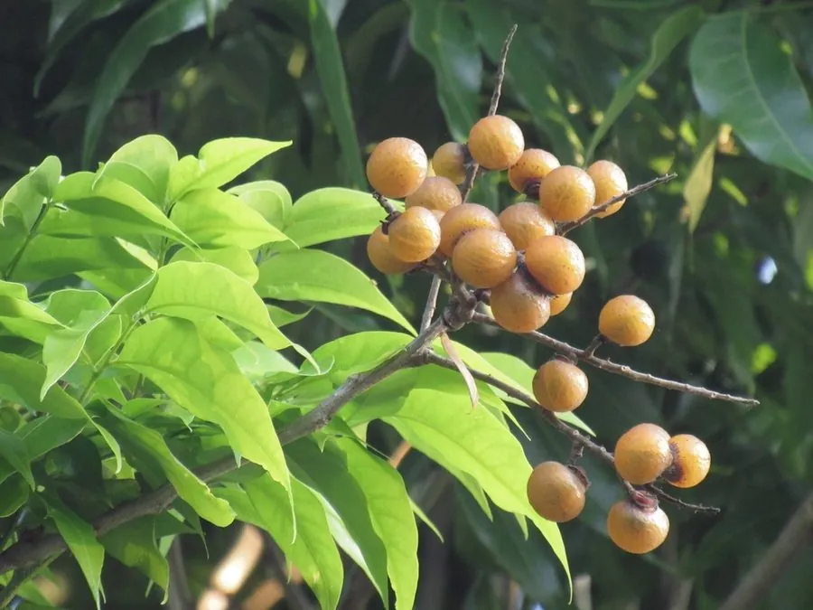

乔木 · 植物界
无患子 Sapindus saponaria

中国南方常见的落叶乔木，果皮含皂素、可代肥皂洗手，种子黑色圆润，可作念珠，是兼具实用与文化的树种。
- 分类
- 门被子植物门纲木兰纲目无患子目科无患子科属无患子属
- 栖息环境
- 海拔 1000 米以下的丘陵、村旁与河岸，喜光耐瘠薄
- 地理分布
- 中国长江流域以南及华南、西南，印度、日本、东南亚也有分布
- 保护级别
- 暂无评估；中国未列入国家重点保护野生植物名录
物种志
无患子为落叶乔木，高可达 20 m，树皮灰褐色、平滑；偶数羽状复叶，小叶 5–8 对，卵状披针形，边缘具细锯齿，秋季叶色转为金黄。花期 5–6 月，圆锥花序顶生，花小、黄绿色；果实为核果，近球形，直径 1.5–2 cm，成熟时橙黄色、半透明，果皮富含皂素，种子黑色、坚硬圆润。
无患子分布于中国长江流域以南及华南、西南地区，也见于印度、日本与东南亚，喜光、喜温暖湿润，耐干旱瘠薄，适宜疏松肥沃、排水良好的土壤。果皮含无患子皂苷，古人用它洗衣、洗头，被称为“洗手果”；种子黑色圆润，可串成念珠，在佛教与民间工艺品中常见；木材可供家具与器具用，根、果可入药。无患子树形优美、秋叶金黄，也是优良的园林与行道树种。
形态与习性
- 株高可达 20 m，树皮灰褐色
- 花期5–6 月，圆锥花序黄绿色
- 果期9–11 月，核果橙黄色
- 光照喜光，不耐长期荫蔽
- 水分耐干旱瘠薄
- 土壤疏松肥沃、排水良好的壤土
- 主要用途果皮代肥皂、种子作念珠、园林行道树、木材制器具
趣味知识
- 无患子的果皮富含皂素，揉搓后能产生泡沫，古人用它洗手洗衣，因此叫“洗手果”。
- 无患子的种子黑色圆润、坚硬如珠，常被串成念珠或手串。
- 无患子秋季叶片变为金黄色，是南方城市里优良的秋色叶行道树。
- 无患子果实的皂苷提取物如今被用于制作天然洗护产品。